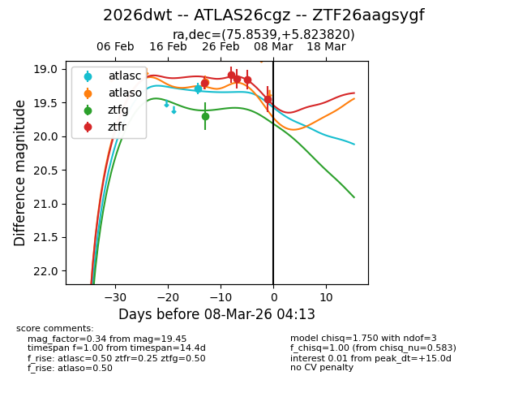
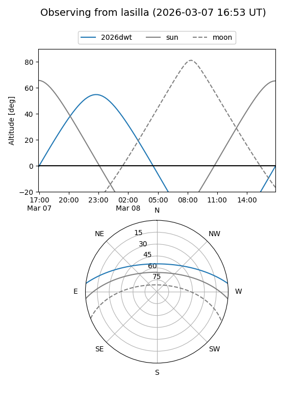
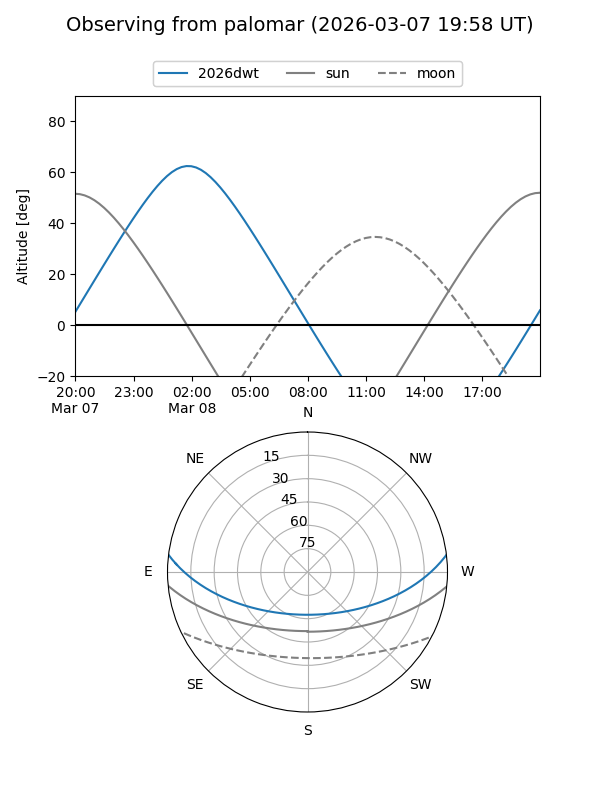
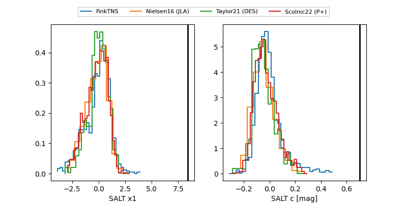

2026dwt
Target 2026dwt at 2026-03-08 04:14
Aliases and brokers:
FINK: link
Lasair: link
ALeRCE: link
TNS: link
YSE: link
alt names
ZTF26aagsygf (ztf,fink_ztf)
2026dwt (tns,yse)
ATLAS26cgz (atlas)
Coordinates:
equatorial (ra, dec) = 75.8539,+5.82382
equatorial (HMS+DMS) = 05:03:24.93,+05:49:25.75
galactic (l, b) = (194.4484,-20.84058)
Flags:
Photometry:
last atlasc=19.29, atlaso=19.20, ztfg=19.70, ztfr=19.45
1 atlasc, 1 atlaso, 1 ztfg, 5 ztfr detections
Lightcurve

Visibility


Additional plots
